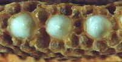
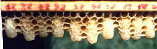
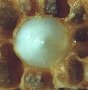

La pappa reale è una sostanza semifluida, gelatinosa, di colore bianco, di sapore acidulo-aromatico caratteristico, di elevato valore nutritivo. E' prodotta dalle ghiandole ipofaringee delle api giovani per alimentare le api regine e gli individui neonati (per questo è detta anche «latte delle api»).

La pappa reale è ricca di sostanze vitali e 100 grammi di prodotto fresco contengono 69,80 g. di acqua e 30,20 g. di residuo secco, il quale è composto per oltre il 48% da proteine e amminoacidi essenziali, per il 38% da zuccheri, per il 10% da grassi.
Contiene un gran numero di vitamine del gruppo B e numerosi sali minerali (calcio, rame, ferro, silicio, zinco, magnesio, manganese ed altri). Inoltre nella pappa reale è presente un fattore antibiotico.

Si assume in piccole dosi una o due volte il giorno con continuità, non assieme ad altri alimenti. E' possibile mescolarla con poco miele in un cucchiaino. Si conserva in frigorifero per lunghi periodi.E' preferibile acquistarla da apicoltori locali, durante il periodo di produzione, che generalmente adottano tecniche produttive che consentono di mantenere il massimo grado di purezza e freschezza. E' in commercio pappa reale importata da paesi extra-comunitari (Cina ed altri) ad un prezzo molto inferiore a quello del mercato locale, per la quale non ci sono garanzie di qualità.
ferup@libero.it